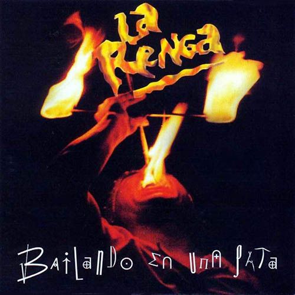
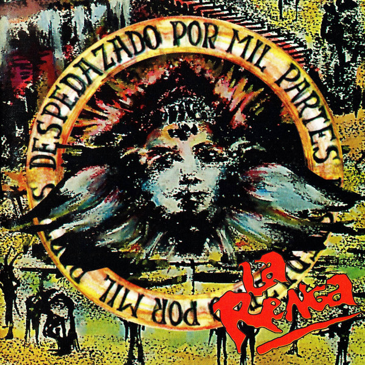
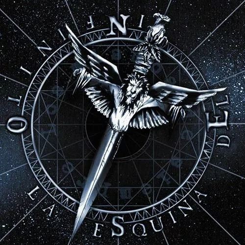
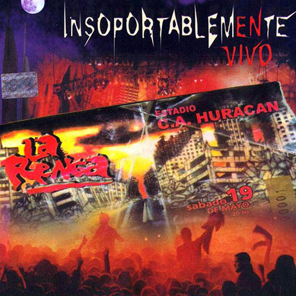
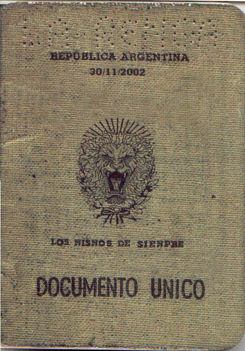
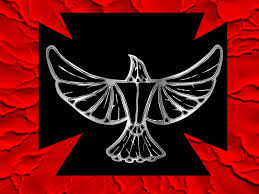
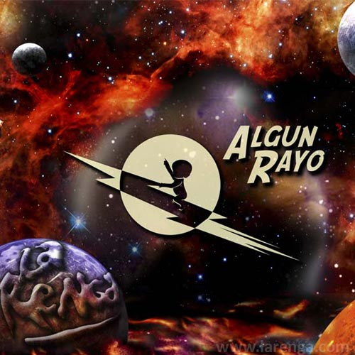
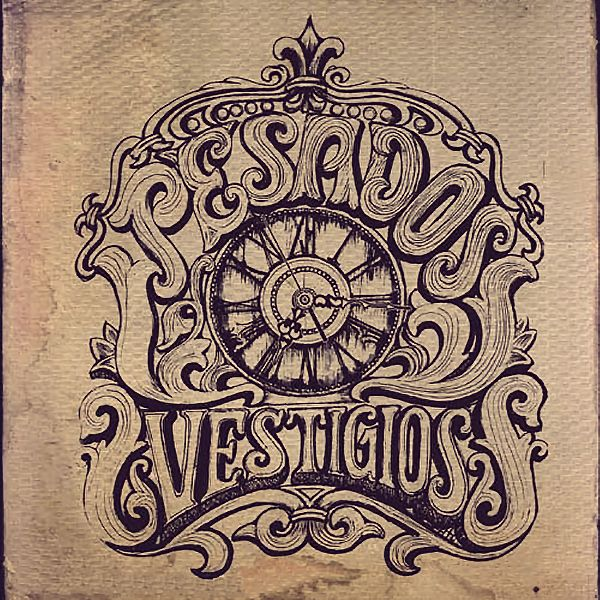

Discografia

Esquivando charcos (1991)
- Somos los mismos de siempre
- Moscas verdes para el charlatan
- Embrolos, fatos y paquetes
- Luciendo mi saquito blusero
- Voy a bailar a la nave del olvido
- Buseca y vino tinto
- El juicio del ganso
- Negra mi alma, negro mi corazon
- Blues de bolivia

Bailando en una pata (1995)
- Buseca y vino tinto
- Moscas verdes para el charlatan
- Embrolos, fatos y paquetes
- El viento que todo empuja
- El juicio del ganso
- Nacido para ser salvaje
- Intervalo
- Negra e mi alma, negro mi corazon
- Luciendo mi saquito blusero
- Blues de bolivia
- Somos los mismos de siempre
- Voy a bailar a la nave del olvido

Despedazado por mil partes
(1996)
- Desnudo para siempre
- A la carga mi rocanrol
- El final es en donde parti
- La balada del diablo y la muerte
- Cuando Vendran
- Psilocybe Mexicana
- Paja brava
- Lo fragil de la locura
- Veneno
- El viento que todo empuja
- Hablando de libertad

La esquina del infinito (2000)
- La vida, las mismas calles
- Motoralmaisangre
- Al que he sangrado
- Panic show
- El cielo del desengaño
- Arte infernal
- En el baldio
- En pie
- El rey de la triste felicidad
- Estalla
- Hey hey, my my

Insoportablemente vivo (2001)
- Panic show
- Motoralmaisangre
- Al que eh sangrado
- Bien alto
- Cuando Vendran
- En el baldio
- El mambo de la botella
- Blues cardiaco
- El terco
- En pie
- El cielo del desengaño
- Lo fragil de la locura
- Un tiempo fuera de casa
- La vida las mismas calles
- El twist del pibe
- El hmbre de la estrella
- Paja brava
- Oportunidad oportuna
- 2+2=3
- Arte infernal
- El circo romano
- Cuando estes aca
- Balada del diablo y la muerte
- El rey de la triste felicidad
- El final es en donde parti
- Me hice cancion
- Psilocybe Mexicana
- El revelde
- Estalla
- Hey hey, my my
- Hablando de la libertad

Documento unico (2002)
- Dementes en el espacio
- Detoador de sueños
- Hielasangre

Truenotierra (2006)
- El monstruo que crece
- Almohada de piedra
- Ruta 40
- La boca del lobo
- Montaña roja
- Palabras estorbantes
- Cualquier historia
- Mujer del caleidoscopio
- Llenado de llorar
- Oscuro diamante
- Entre la niebla
- Cuadrado obviado
- Alunizando al unisono
- Sustancia entre las plantas
- Truenotierra
- Anaximandro
- Neuronas abrazadas

Algun rayo (2010)
- Canibalismo galactico
- Destino ciudad futura
- La furia de la bestia rock
- Poder
- Algun rayo
- Cristal de zirconio
- Dioses de terciopelo
- Inventa un mañana
- Disfrazado de amigo
- Lunaticos
- Desoriente blues
- Caricias de asfalto

Pesados vestigios (2014)
- Corazon fugitivo
- Nomades
- Mirada de acantilado
- Dia de sol
- Sabes que
- San miguel
- Pole
- Muy indignado
- No para de aletear
- Motorock
- Masomenos blues